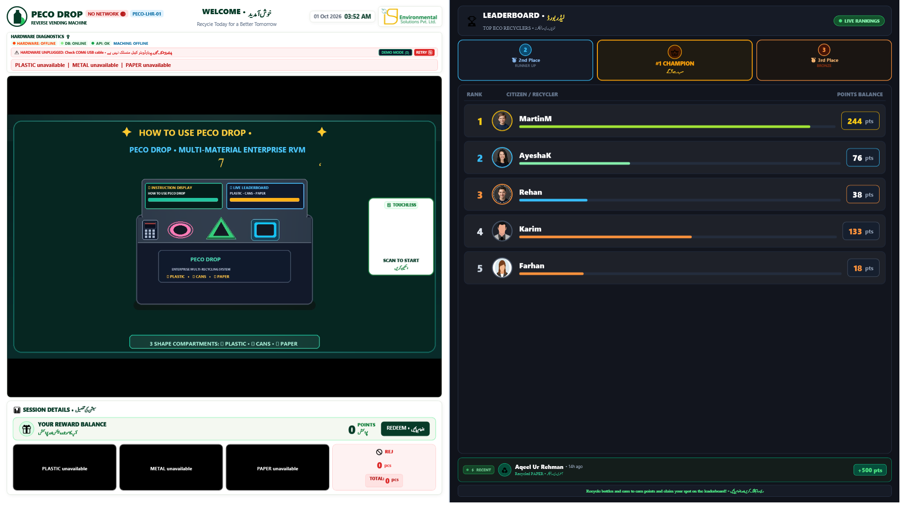
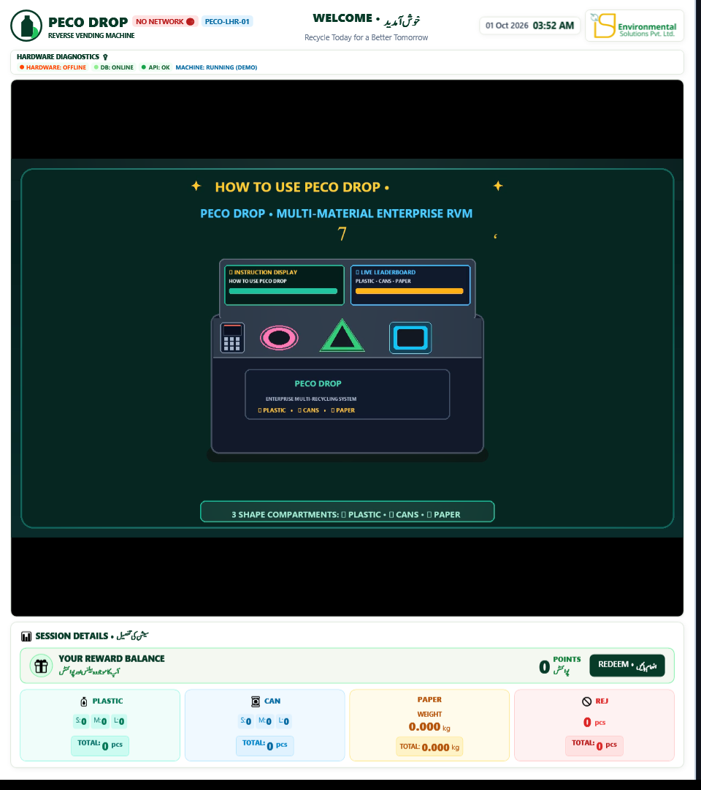
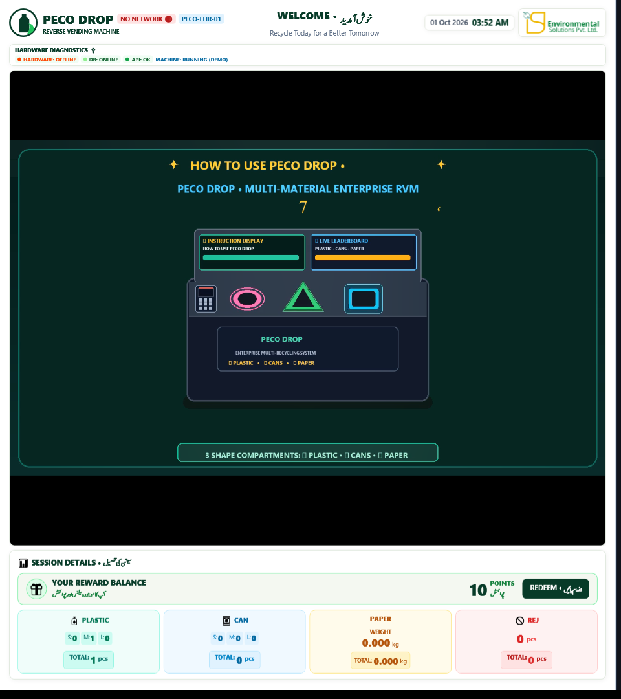
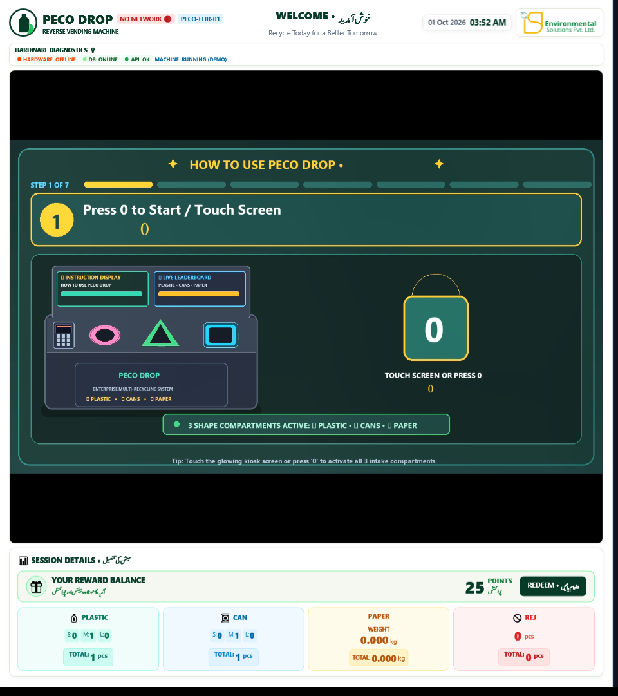
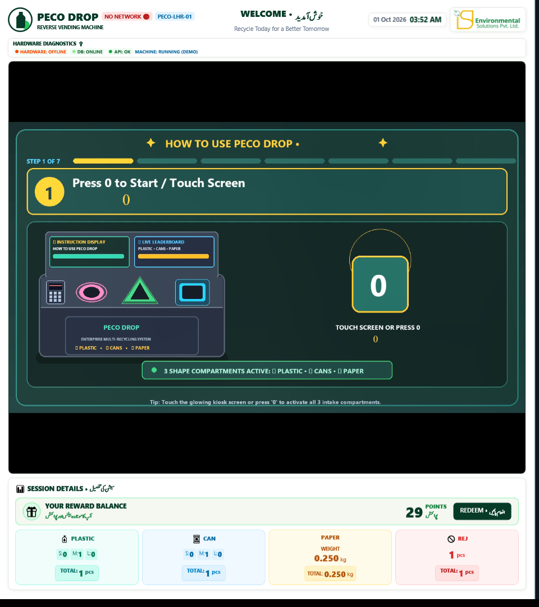

Dual-display corporate recycling kiosk for offices, factories, banks and university campuses: employee session flow, the three shaped intakes, rewards, daily operation, administration, hardware and troubleshooting.
PecoDrop is the enterprise edition of the ISP reverse vending machine. It is installed inside corporate campuses and accepts three materials, each through its own illuminated, shaped opening. Every accepted item is counted, converted into reward points and reported to your organization's sustainability dashboard in real time. Points are credited to the recycler's account, and the organization can turn them into recognition, cafeteria discounts, internal perks and CSR / ESG reporting.
Which physical screen is on the left or right is configured per site by the operator (see section 16). The factory default places the interactive kiosk display on the left and the signage display on the right.

Below the guide area, the SESSION DETAILS panel shows YOUR REWARD BALANCE (points earned in this session) with the REDEEM button, and four cards: PLASTIC (S / M / L counts and total pieces), CAN (S / M / L and total), PAPER (weight in kg and total) and REJ (rejected items). The counts update the moment an item is accepted.
The idle screen shows the instruction video with the overlay "PRESS 0 TO START RECYCLING – Or touch screen / scan touchless QR to begin session". There are three ways to begin:
| Method | What to do | Result |
|---|---|---|
| A. Touchless QR (recommended) | Open Trash to Cash, tap the scanner and scan the on-screen "SCAN TO START" QR (or scan it with the phone camera and follow the link). The QR refreshes itself about every 110 seconds, so always scan the one currently on screen. | The kiosk greets you by name ("Eco Citizen" if the profile has no name), shows your current Balance in points, and the session opens linked to your account. Points are credited automatically at the end. |
| B. Touch the screen | Tap the glowing "TOUCH SCREEN OR PRESS 0" card. | An anonymous session opens. You will enter your mobile number, or scan the claim QR, at the end. |
| C. Keypad | Press 0 once. | Same as B. |
When the session is open the screen reads "SESSION ACTIVE • INTAKE GATES READY – PLEASE INSERT BOTTLE / CAN / PAPER – Sensors active • Insert items one at a time into the corresponding illuminated aperture" and the status changes to MACHINE: RUNNING. The three apertures light up.



Paper is not counted in pieces. A digital load cell (HX711) under the square intake weighs the paper in grams and converts the weight into points according to your organization's "per kg" rule.

| Message on screen | Meaning and what to do |
|---|---|
| Rejected / Invalid item | The sensors could not recognise the item as a valid bottle or can of a known size. Wait for all movement to stop, take the item back from the return point if it is presented, and retry once with a clean, eligible item. Do not force it. |
| Scan timed out. Remove bottle and try again | The item was not fully released or was held during scanning. Release it completely and try again. |
| Plastic did not reach the sizing chamber / Can did not reach the sizing chamber | The item stopped before the measuring chamber. Make sure it is inserted straight and released. |
| Could not measure bottle length | The ultrasonic sizing could not read the item; often a crushed or very small item. Try a different item. |
| Paper reached the inlet but no stable weight was measured | The scale could not settle. Remove the paper when instructed, make sure it is dry and loose, and retry once. |
| HX711 load cell is not responding | Scale fault. Paper cannot be accepted. Report to the site operator. |
| Bottle stuck – Remove the bottle before inserting another item – MACHINE: BLOCKED | The item did not clear the drop gate. Remove it from the opening if it is reachable without reaching inside; otherwise call the site operator. Points for that item are cancelled. |
| PLASTIC bin is full (or METAL / PAPER) – card shows Full | That bin needs emptying. The other materials may continue if their cards still read Ready. |
| HARDWARE CONNECTION ERROR: Check USB COM port / HARDWARE: OFFLINE | The kiosk computer has lost contact with the machine hardware. Do not deposit anything. Report to the operator. |
| Calibrating... / Keep pipe empty / Recalibrating... | The machine is zeroing its sensors. Wait until the session-ready message returns. |
When you have inserted your last item press Enter or tap REDEEM. The guards you may see: "Start recycling first", "No items to credit / Insert an item before using your wallet", or "Wallet unavailable / Connect local DB or Central Network before crediting a wallet" (the kiosk is fully offline; ask the operator).
The points are credited immediately and the ⭐ EXPERIENCE RATING window appears: "✓ Wallet Credited: 03xx xxxxxxx (+25 PTS) – HOW WAS YOUR EXPERIENCE? – Press 1 to 5 on keypad or tap stars to rate · Press ENTER to finish – Auto-completing in 8s...". Press 1–5 then Enter, or tap Submit Rating ✓, or simply wait; the default rating is 5 stars. Skip (or Esc) finishes without rating.
The 💳 WALLET TRANSFER · Scan QR or Enter Mobile Number to Claim Points window appears with the RECYCLED DEPOSIT SUMMARY (items recycled, ⭕ Plastic / 🔺 Cans / 🟦 Paper breakdown and POINTS TO CLAIM). Choose one of two ways to claim:
After a successful claim the kiosk shows "THANK YOU FOR RECYCLING! – Your wallet has been credited and feedback recorded.", asks for the 1–5 star rating, and returns to the welcome screen.
| Indicator | Values and meaning |
|---|---|
| Header badge | LIVE central API reachable • NO NETWORK API unreachable; deposits still work and are stored locally for later sync. |
| HARDWARE | COMx (green) connected and calibrated • OFFLINE / Cable Disconnected USB cable or Arduino missing • ERROR port could not be opened. |
| DB | OK local SQL Server reachable • ONLINE/OFFLINE as reported; without local DB and without API, wallet credit is refused. |
| API | OK Master Portal reachable • a 403 response means "Machine not registered/authorized on Central Dashboard": the machine ID must be registered in the portal first. |
| MACHINE | IDLE • RUNNING (session active) • BLOCKED (item stuck) • NOT CALIBRATED • OFFLINE • Partial / Warning (one compartment unavailable). |
| Compartment cards | Ready • Full (bin sensor blocked for more than 0.5 s; clears 2 s after the bin is emptied) • Unavailable (compartment failed self-test, iris disabled, or firmware compiled without it). |
| Warning banner | Examples: "PLASTIC bin is full", "METAL working failed", "MQ6: Smoke / gas detected" (MQ-6 gas sensor). A smoke/gas warning requires immediate inspection. |
| DEMO MODE / DEMO TESTING (F2) | The kiosk is simulating hardware. Deposits made in demo mode are test data. Leave demo mode by restarting the application. |
Digit sequences are typed on the numeric keypad; the buffer accepts up to 8 characters and resets after 4 seconds of inactivity. Servo and iris sequences are ignored while in demo mode or when the hardware is disconnected.
| Key | Function |
|---|---|
| 0 / Insert / NumPad 0 | Start a session. Caution: if the hardware is disconnected, pressing 0 silently enters demo mode (simulated deposits); restart the application to leave demo mode. |
| Enter | Finish the session and open the wallet / rating window. |
| 1 – 5 | Experience rating in the rating window. |
| Esc or * | Close the current dialog without claiming; during a session stops the machine (a QR-authenticated session with items is auto-credited first). At the idle screen, Esc exits the kiosk application (operator use). |
| Backspace, -, Del | Delete the last digit in an input field. |
| / | Toggle keypad mouse-emulation (arrows move the pointer, 5 / Enter click, 0 / . right-click). |
| Sequence | Function |
|---|---|
| 55 | Toggle the REAL-TIME TELEMETRY TERMINAL overlay (live serial and sync log). Esc or 55 closes it. |
| 66 / 77 / 88 / 99 | START / STOP / RESET (also reconnects the serial port) / CALIBRATE the machine. |
| 1 ×3 within 1.5 s, or A | Open the Administration login. |
| 001 | Enter demo mode (no window). 1122, F2 or D: demo mode with the Demo Testing simulator window. |
| 0012 / 0021 | Display layout: kiosk LEFT + signage RIGHT / signage LEFT + kiosk RIGHT (section 16). |
| 1218 / 1219 | Confidential RESTART / SHUTDOWN dialog for the kiosk computer (section 22). |
| 601–612 | Servo tests: 601/602 plastic iris open/close • 603/604 plastic drop gate • 605/606 metal iris • 607/608 metal drop gate • 609/610 paper iris • 611/612 paper drop gate. Manual servo testing stops normal intake; close commands settle and detach the servo. |
| 620–629 | Iris aperture enable / disable: 620 enable all • 621/622 plastic enable/disable • 623/624 metal • 625/626 paper • 629 disable all. A disabled aperture stays closed and ignores objects. |
| S | Stop machine (keyboard). |
Open it with 1 1 1 (or A) and sign in with the kiosk admin account stored in the local SQL Server (table AdminCredentials). Change the factory password on first commissioning using "🔐 CHANGE ADMIN PASSWORD" in the Security tab. If the local SQL Server is unreachable, the Admin login is refused until the database service is running again.
The header of the window shows the SQL Server and Dashboard API status and the buttons 🎮 Simulator, Refresh and Save Points. Tabs:
| Tab | Contents |
|---|---|
| Point Settings | Grid of the local point rules (material × size → points, paper per kg). Save Points writes them to the local table dbo.PointSettings. Rules pushed from the Master Portal override local values. |
| Transactions Log | Local session and wallet transactions with their sync state. |
| 🔐 Security & Manual Data Sync | Local vs Dashboard telemetry comparison • ⚡ Sync Local Unsynced Data to Dashboard • 🚀 Sync All Local SQL Data to Central Server (re-posts every local session to /api/machine/sync-session) • 🔐 CHANGE ADMIN PASSWORD • 🎯 DYNAMIC LOCAL POINT SETTINGS MATRIX with 🔄 Pull Latest Point Settings from Dashboard. |
| ⚙️ System & Hardware Config (config.txt) | Reload / Save. §1 Machine ID, Kiosk UI Theme (Modern / Classic), Central Dashboard Base URL, Installation Location, Latitude / Longitude with 📍 Auto-Detect. §2 SQL Connection String. §3 Arduino Port / Baud, Camera Port / Baud and hardware buttons: Refresh All Sensors, Safe Self-Test, Scale Read, Calibrate All, CLOSE ALL / SAFE STOP, Reconnect / Re-initialize. INDIVIDUAL SERVO TESTING (plastic / metal / paper iris and drop gates). CHAMBER IRIS APERTURE CONTROL (ENABLE / DISABLE per chamber, ENABLE ALL, DISABLE ALL, REFRESH STATUS). HARDWARE SENSOR BYPASS & FAULT RESILIENCE OVERRIDES (bypass or restore the Plastic Middle, Plastic Top, Metal Middle, Metal Top sizing transducers and the Optical Bin Sensors). §4 Folders & Classifier: Advertisement Video Folder, Instruction Video Folder, Model Path, Capture Directory. |
| ⚡ Central Dashboard Simulator & Test Suite | 🔌 Ping Connection & Rules, manual entry (Machine ID, Mobile, Material PLASTIC / CAN / CUP / TETRA PAK / PAPER-CARDBOARD / GLASS, Size, Count, Weight) → 🚀 Simulate Bottle Insert & Sync, 📡 Send Heartbeat (85% Fill), 🔍 Verify QR Code Scanner, console log. Use only for commissioning tests; the records are real on the portal. |
| 📺 Advertisement & Video Signage | Browse & Add, Open Ads Folder, Refresh Playlist, Apply & Play, Preview, Delete Selected (section 17). |
config.txt sits next to the executable and is edited through the Admin panel (or a text editor while the application is closed). The display layout and UI theme are also stored in the local table dbo.KioskSettings, which takes precedence after the first run.
| Key | Default | Meaning |
|---|---|---|
| MachineId | RVM-RWP (example) | Unique kiosk ID, must match the machine registered on the Master Portal (for example PECO-LHR-01). Unconfigured kiosks report as PECO-UNCONFIGURED. |
| CentralApiUrl | https://isprvm.binishaqsoft.com | Master Portal base URL. |
| KioskApiKey | (empty) | Shared secret issued by ISP; sent as the x-kiosk-key header on every API call. Required once the portal enforces kiosk authentication. |
| ConnectionString | Server=.\SQLEXPRESS;Database=RVMDB;User ID=RVM;… | Local SQL Server connection. Change the SQL password from the factory value. |
| ArduinoPort / ArduinoBaud | COM16 / 115200 | Serial port of the Arduino Mega 2560. If the configured port is missing, the app auto-selects the single USB-serial device present. |
| CameraPort / CameraBaud | COM31 / 921600 | Optional camera module port (excluded from auto-selection). |
| AdvertisementVideoFolder / InstructionVideoFolder | Ads\Advertisements / Ads\Instructions | Signage playlist folder and instruction video folder. |
| ModelPath / CaptureDirectory | Models\… / Captures | Classifier model and capture folder (optional). |
| DisplayMode | MultiDisplay | MultiDisplay (kiosk on primary, signage on second monitor) or BothOnPrimary (65 % / 35 % split on one monitor; also with command-line --both-on-primary / --single-display). |
| DisplayLayout | 0012 | 0012 = kiosk left, signage right • 0021 = signage left, kiosk right. |
| UiTheme | Modern | Modern or Classic (Legacy Dual-Pane) interactive skin. |
| BypassPlasticMidSensor, BypassPlasticTopSensor, BypassMetalMidSensor, BypassMetalTopSensor, BypassBinSensors | false | Persisted sensor bypass flags, re-sent to the firmware at every calibration. |
Order of precedence: Master Portal machine config (fetched with every heartbeat) → local dbo.PointSettings → built-in defaults (plastic 5 / 10 / 15, cans 10 / 15 / 20, paper 15 per kg). Paper rules support per-kg, per-gram and per-piece units; points are rounded incrementally on the cumulative weight of the session.
POST /api/machine/heartbeat with machine ID, status (ONLINE, IN_SESSION, BIN_FULL, WARNING, ERROR), fill levels of the three bins, scale status, smoke flag, anti-cheat trips, local IP, location and coordinates. The portal's Machine Health tab shows this data; a kiosk that misses heartbeats is shown OFFLINE.
Each accepted item is posted live to /api/machine/sync-session with the cumulative counts of the session; the final post carries the claiming user. Feedback ratings go to /api/machine/feedback. The leaderboard is read from /api/usernames scoped to the organization the kiosk is bound to (corporate kiosks never show public citizens).
Deposits and wallet credits continue with the local SQL Server when the portal is unreachable (header shows NO NETWORK). Unsynced rows are re-sent automatically on the 15-second cycle and can be pushed manually from the Security tab. If both the local DB and the portal are down, the kiosk refuses to open the wallet window ("Wallet unavailable").
The application scans the serial ports every 1.5 s. It prefers the configured ArduinoPort, otherwise the single USB-serial device found (COM1 and the camera port are excluded). On reconnection it renews the lease, requests calibration and waits for CALIBRATION:OK before accepting bin-full states. While disconnected the screen shows "HARDWARE: OFFLINE – Cable Disconnected – Arduino cable unplugged — reconnect cable to resume".
| Symptom | Cause and action |
|---|---|
| Red banner "HARDWARE CONNECTION ERROR: Check USB COM port" with RETRY / DEMO MODE buttons | USB cable or Arduino not detected. Reseat the cable, press RETRY or 88. Check ArduinoPort in the Admin config. Never run the public kiosk in DEMO MODE. |
| HARDWARE: COMx but MACHINE: NOT CALIBRATED | Empty every chamber and the paper scale, then press 99. If one chamber keeps failing, disable its iris (section 19.4) and log a service call. |
| A compartment reads Full although the bin is empty | Bin sensor blocked or misaligned. Clean the sensor window; as a temporary measure bypass the bin sensors from the Admin panel and request service. |
| Paper weight does not stabilise | Paper touching the chamber wall, wet paper, or foreign objects on the scale. Clear the scale, retry; if "HX711 load cell is not responding" persists, check the load-cell cable. |
| "Bottle stuck" / MACHINE: BLOCKED | Open the affected drop gate with its servo hotkey (603 / 607 / 611) or from the Admin panel, let the item fall, then close it (604 / 608 / 612) or use CLOSE ALL / SAFE STOP. Do not reach inside with the machine powered. |
| Header NO NETWORK, API not OK | Check the kiosk's internet connection and CentralApiUrl. Deposits continue offline and sync later. |
| API shows 403 / "not registered" | The machine ID is not registered on the Master Portal, or the KioskApiKey is wrong. Register the machine in the portal's Machine Health / RVM Management tab and verify the key. |
| Touchless QR never changes to STARTED after scanning | The phone must have internet access and the Trash to Cash app must be signed in. The QR token expires after 110 s; scan the current one. Confirm the API badge is LIVE. |
| Points shown differ from the portal | Point rules on the portal override local values on the next heartbeat (15 s). Use "Pull Latest Point Settings from Dashboard" and compare the Point Settings tab. |
| Leaderboard empty | The kiosk is not bound to an organization on the portal, or the API is unreachable. Bind the kiosk to the client in Enterprise Clients and wait one sync cycle. |
| Wrong screen shows the kiosk | Type 0012 or 0021. If a monitor is missing, check cables and Windows "Extend" mode. |
| "MQ6: Smoke / gas detected" | Isolate the kiosk from users, inspect for burning smell or heat, power off if in doubt and escalate immediately. |
| Admin login refused | Local SQL Server down (start the SQL Express service) or wrong password. There is no fallback password; a lost admin password must be reset in the AdminCredentials table by ISP support. |
| Message | Meaning |
|---|---|
| HOST:WAITING / HOST:ONLINE / HOST:TIMEOUT | Firmware waiting for the application • lease established • lease expired (safe stop). |
| HOST:ALIVE / HOST:START (from app) | Lease renewal • start or calibrate. |
| START / STOP / RESET / CALIBRATE / STATUS / SCALE / CLEAR_CHAMBER / DEBUG ON|OFF | Operator commands. Replies: MACHINE:STARTED, MACHINE:STOPPED, RESET:OK, PAPER:SCALE_RAW… |
| CALIBRATION:OK / ERROR:CALIBRATION_FAILED / ERROR:PAPER_SCALE_NOT_READY | Calibration result. |
| PLASTIC:OBJECT_DETECTED, METAL:…, PAPER:… | Item entering a chamber. |
| SIZE:SMALL|MEDIUM|LARGE|UNKNOWN;MATERIAL:…;METAL:0|1 | Sizing / material result. |
| BOTTLE:CLEARED;COMPARTMENT:X | Item dropped into the bin – points are committed. |
| INTAKE:IDLE, *_NO_ITEM_DROPPED, ERROR:*_ARRIVAL_TIMEOUT, ERROR:PAPER_WEIGHT_TIMEOUT, ERROR:*_INVALID_SENSOR_PATTERN, ERROR:CLEAR_TIMEOUT | No item / timeouts / stuck item. |
| COMPARTMENT:NAME;WORKING:OK|FAILED;BIN:FULL|CLEAR | Per-compartment status (also legacy BIN:FULL / BIN:CLEARED). |
| SERVO:ALL:CLOSED, SERVO:OK:<cmd>, IRIS:STATUS, BYPASS:STATUS, MQ6:WARNING|CLEAR, ERROR:HOST_OFFLINE, ERROR:COMPARTMENT_BUSY | Service replies and warnings. |
MachineId = PECO-LHR-01 CentralApiUrl = https://isprvm.binishaqsoft.com KioskApiKey = <issued by ISP – keep secret> ConnectionString = Server=.\SQLEXPRESS;Database=RVMDB;User ID=RVM;Password=<site password>;Encrypt=False;TrustServerCertificate=True; ArduinoPort = COM16 ArduinoBaud = 115200 CameraPort = COM31 CameraBaud = 921600 AdvertisementVideoFolder = Ads\Advertisements InstructionVideoFolder = Ads\Instructions DisplayMode = MultiDisplay DisplayLayout = 0012 UiTheme = Modern BypassPlasticMidSensor = false BypassPlasticTopSensor = false BypassMetalMidSensor = false BypassMetalTopSensor = false BypassBinSensors = false